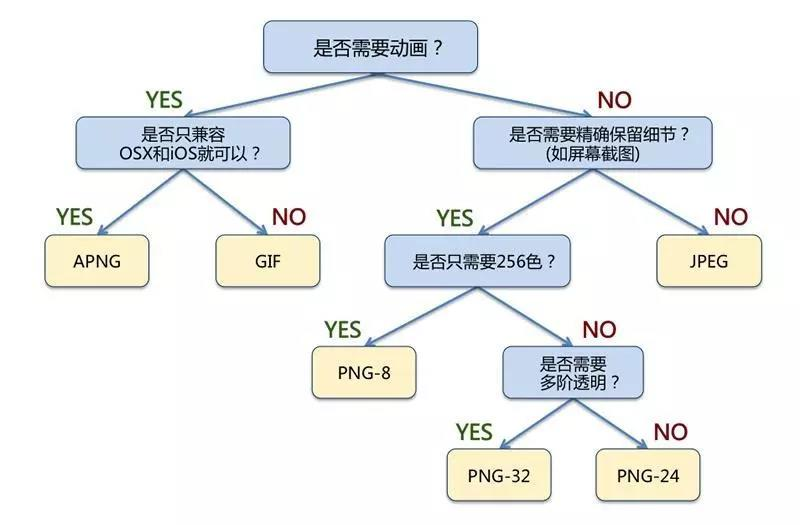
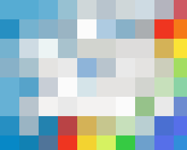
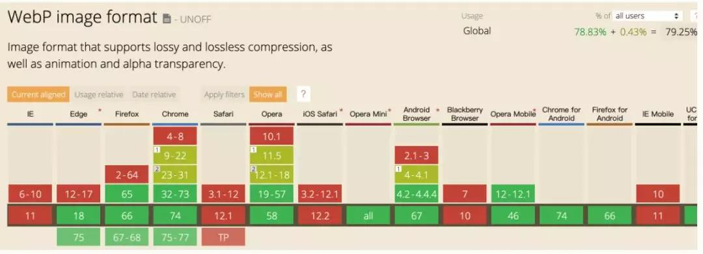
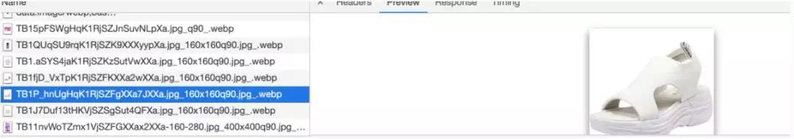
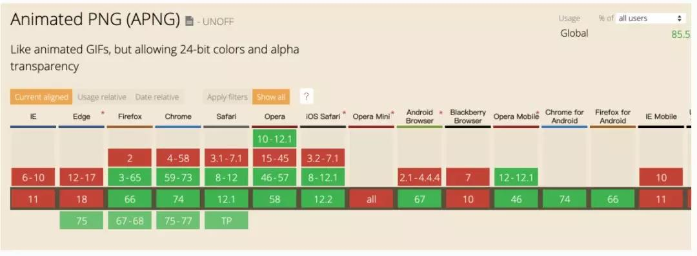

# 图片相关知识
# 前言
本人平时学习及收集内容，欢迎参入一起讨论。
# 内容
# 一、图片格式选择
| 图片格式 | 压缩方式 | 透明度 | 动画 | 浏览器兼容 | 适应场景 |
|---|---|---|---|---|---|
| baseline-jpeg | 有损压缩 | 不支持 | 不支持 | 所有 | 复杂颜色及形状、尤其是照片 |
| progressive-jpeg | 有损压缩 | 不支持 | 不支持 | 所有 | 复杂颜色及形状、尤其是照片 |
| JPEG | 有损压缩 | 不支持 | 不支持 | 所有 | 复杂颜色及形状、尤其是照片 |
| GIF | 无损压缩 | 支持 | 支持 | 所有 | 简单颜色，动画 |
| PNG | 有损压缩 | 支持 | 不支持 | 所有 | 需要透明时 |
| APNG | 有损压缩 | 支持 | 支持 | 所有（除 IE 和 Oper 外） | 需要半透明效果的动画 |
| WebP | 有损压缩 | 支持 | 支持 | 所有（除 IE 和 Safari 外） | 复杂颜色及形状浏览器平台可预知 |
| SVG | 有损压缩 | 支持 | 不支持 | 所有（IE8 以上） | 简单图形，需要良好的放缩体验 |
| 需要动态控制图片特效 |

# 二、图的类型分类
# 2.1 位图(点阵图)
位图，也叫做阵图，像素图。构成点阵图的最小单位是像素，位图就是由像素阵列的排列来实现其显示效果的，每个像素有自己的颜色信息，在对位图图像进行编辑操作的时候，可以操作的对象是每个像素，我们可以改变图像的色相、饱和度、透明度，从而改变图像的显示效果。
常见的比如：jpg、png、webp 等，我们平时遇到的大多数都是位图。
# 2.2 矢量图
矢量图，也叫做向量图。矢量图并不纪录画面上每一点信息，而是纪录了元素开着及颜色的算法，当你打开一幅矢量图的时候，软件对图形对应的函数进行运算，将运算结果图形的形状和颜色显示给你看。
无论显示画面是大还是小，画面上的对象对应的算法是不变的，所以，即使对画面进行位数相当大的缩放，其显示效果仍然相同（不失真）。
常见的就是SVG格式的。
# 三、图的压缩分类
# 3.1 无压缩
无压缩的图片格式不对图片数据进行压缩处理，能准确地呈现原图片，BMP 格式就是其中之一。
# 3.2 无损压缩
在压缩图片的过程中，图片的质量没有任何损耗。我们任何时候都可以从无损压缩过的图片中恢复出原来的信息。
压缩算法对图片的所有的数据进行编码压缩，能在保证图片的质量的同时降低图片的尺寸。
png 是其中的代表。
# 3.3 有损压缩
指在压缩文件大小的过程中，损失了一部分图片的信息，也即降低了图片的质量，并且这种损失是不可逆的，我们不可能从一个有损压缩过的图片中恢复出完整的图片。
常见的有损压缩手段，是按照一定的算法将临近的像素点进行合并。压缩算法不会对图片所有的数据进行编码压缩，而是在压缩的时候，去除了人眼无法识别的图片细节。因此有损压缩可以在同等图片质量的情况下大幅降低图片的尺寸。其中的代表是jpg。
# 小结
- 使用有损压缩处理图像，是支队某些像素数据，无法打架原图。
- 使用无损处理图像，是对像素数据进行压缩，可以找回原图。
# 四、常见的图片格式解析
# 4.1 GIF
关键词：无损压缩、索引色、透明、动画
GIF 的原义是“图像互换格式”，是一种基于 LZW 算法连续色调的无损的基于索引色的压缩格式。其压缩率一般在50%左右，它不属于任何应用程序所以几乎所有相关软件都支持它，公共领域有大量的软件在使用 GIF 图像文件。
GIF 是一种无损压缩，所以它只是对像素数据进行压缩，其实 LZW 算法只是一个压缩数据的算法，如果你懂哈夫曼算法的话，可能就比较好理解压缩数据是怎么回事儿
GIF 的特性是帧动画。
相比古老的 bmp 格式，尺寸较小，而且支持透明(不支持半透明，因为不支持 Alpha 透明通道 )和动画。
优势
- 优秀的压缩算法使其在一定程度上保证图像质量的同时将体积变得很小。
- 可插入多帧，从而实现动画效果。
- 可设置透明色以产生对象浮现于背景之上的效果。
缺点
由于采用了 8 位压缩，最多只能处理 256 种颜色，故不宜应用于真彩色(文末的附录有解释)图片。
适合场景
色彩简单的 logo、icon、线框图、文字输出等。
# 4.2 JPG/JPEG
关键词： 有损压缩、直接色、适合大图、体积小
JPEG 格式是最常见的一种图像格式，文件后辍名为“.JPEG”或“.jpg”，JPEG 可以说是人们最熟悉的图档格式，相信在数字相机普及的现在，几乎每台数字相机、照相手机都可以（甚至只能）输出 JPEG 格式的图档。
JPEG 是一种很典型的使用有损压缩图像格式，也就是说使用都每次进行 JPEG 的存档动作后，图档的一些内容都会遭到永久性的破坏，尤其是使用过高的压缩比例，将其最终解压缩后恢复的图像质量明显降低，如果追求高品质图像，不家采用过高压缩比例。
JPEG 图片格式的设计目标，是在不影响人类可分辨的图片质量的前提下，尽可能的压缩文件大小。
Baseline JPEG 和 Progressive JPEG
JPEG 有两种保存方式：Baseline JPEG(标准型)、Progressive JPEG(渐进式)。两种格式有相同尺寸以及图像数据，他们的扩展名也是相同的，唯一的区别是二者显示的方式不同。
Baseline JPEG
Baseline JPEG 文件存储方式是按从上到下的扫描方式，把每一行顺序的保存在 JPEG 文件中，打开这个文件显示它的内容时，数据将按照存储时的顺序从上到下一行一行的被显示出来，直到所有的数据都被读完，就完成了整张图片的显示。如果文件较大或者网络下载速度较慢，那么就会看到图片被一行行加载的效果，这种格式的 JPEG 没有什么优点，因此，一般都推荐使用 Progressive JPEG。

Progressive JPEG
和 Baseline 一遍扫描不同，Progressive JPEG 文件包含多次扫描，这些扫描顺寻的存储在 JPEG 文件中。打开文件过程中，会先显示整个图片的模糊轮廓，随着扫描次数的增加，图片变得越来越清晰。这种格式的主要优点是在网络较慢的情况下，可以看到图片的轮廓知道正在加载的图片大概是什么。在一些网站打开较大图片时，你就会注意到这种技术。
渐进式图片带来的好处是可以让用户在没有下载完图片就可以看到最终图像的大致轮廓，一定程度上可以提升用户体验（瀑布流的网站建议还是使用标准型的）。
更多关于 Baseline JPEG 和 Progressive JPEG 请看这篇文章：使用渐进式 JPEG 来提升用户体验。
优点
- 可以支持 24bit 真彩色，普遍应用于需要连续色调的图像如色彩丰富的图片、照片等；
- 可利用可变的压缩比以控制文件大小；
- 支持交错（对于渐近式 JPEG 文件）；
缺点
- JPEG 不适合用来存储企业 Logo、线框类的图。因为有损压缩会导致图片模糊，而直接色的选用，又会导致图片文件较 GIF 更大。
- 有损耗压缩会使原始图片数据质量下降。
- JPEG 图像不支持透明度处理，透明图片需要召唤 PNG 来呈现。
适合场景
JPG 适用于呈现色彩丰富的图片，在我们日常开发中，JPG 图片经常作为大的背景图、轮播图或 Banner 图出现。
GIF vs JPEG
由于 GIF 与 JPEG 有着如此不同的特性，因此我们可以很轻易的选择何时该用哪一种格式来输出我们需要的图档：当图片拥有丰富的色彩时，并且没有明显锐利反差的边缘线条时，选择 JPEG 可以得到最好的输出结果，照片就是最好的例子；当图片是拥有明确边缘的线条图、没有使用太多色彩、甚至可能需要透明背景时，GIF 是很好的选择，档案小、画质又精美。
# 4.3 PNG
关键词：
便携式网络图形（简称 PNG，英语全称：Portable Network Graphics）。PNG 能够提供长度比 GIF 小 30%的无损压缩图像文件。它同时提供 24 位和 32 位真彩色图像支持以及其他诸多技术性支持。由于 PNG 优秀的特点，PNG 格式图片可以称为“网页设计专用格式”。PNG 最初的开发目的是为了作为 GIF 的替代方案的，作为做新开发的影像传输文件格式，PNG 同样使用了无损压缩格式，事实上 PNG 的开发就是因为 GIF 所使用的无损压缩格式专利问题而诞生的。
PNG 有三种形式，下面分别介绍一下他们的区别。
PNG-8
PNG-8 是 PNG 的索引色版本。PNG-8 是无损的、使用索引色的、点阵图。
PNG-8 是非常好的 GIF 替代者，在可能的情况下，应该尽可能的使用 PNG-8 而不是 GIF，因为在相同的图片效果下，PNG-8 具有更小的文件体积。除此之外，PNG-8 还支持透明度的调节，而 GIF 并不支持。 现在，除非需要动画的支持，否则我们没有理由使用 GIF 而不是 PNG-8。
PNG-24
PNG-24 是 PNG 的直接色版本。PNG-24 是无损的、使用直接色的、点阵图。
无损的、使用直接色的点阵图，听起来非常像 BMP，是的，从显示效果上来看，PNG-24 跟 BMP 没有不同。PNG-24 的优点在于，它压缩了图片的数据，使得同样效果的图片，PNG-24 格式的文件大小要比 BMP 小得多。当然，PNG24 的图片还是要比 JPEG、GIF、PNG-8 大得多。
虽然 PNG-24 的一个很大的目标，是替换 JPEG 的使用。但一般而言，PNG-24 的文件大小是 JPEG 的五倍之多，而显示效果则通常只能获得一点点提升。所以，只有在你不在乎图片的文件体积，而想要最好的显示效果时，才应该使用 PNG-24 格式。
另外，PNG-24 跟 PNG-8 一样，是支持图片透明度的。
理论上来说，当你追求最佳的显示效果、并且不在意文件体积大小时，是推荐使用 PNG-24 的。
实践当中，为了规避体积的问题，我们一般不用 PNG 去处理较复杂的图像。当我们遇到适合 PNG 的场景时，也会优先选择更为小巧的 PNG-8。
PNG-32
PNG-32 跟 PNG-24 的区别就是多了一个 Alpha 通道，用来支持半透明，其他的跟 PNG-24 基本一样。
优点：
- 支持高级别无损耗压缩；
- 支持 alpha 通道透明度；
- 支持 256 色调色板技术以产生小体积文件
- 最高支持 24 位真彩色图像以及 8 位灰度图像。
- 支持图像亮度的 Gamma 校准信息。
- 支持存储附加文本信息，以保留图像名称、作者、著作权、创作时间、注释等信息。
- 渐近显示和流式读写，适合在网络传输中快速显示预览效果后再展示全貌。
缺点：
- 较旧的浏览器 IE6- 和程序可能不支持 PNG 文件；
- 与 JPEG 的有损耗压缩相比，PNG 提供的压缩量较少；
- 与 GIF 格式相比，对多图像文件或动画文件不提供任何支持。
适合场景
呈现小的 Logo、颜色简单且对比强烈的图片或背景等。
关于 PNG 的小知识点
PNG 分为两种，一种是 Index，一种是 RGB。Index 记录同一种颜色的值和出现的位置（简单地说，比如一个 2px*2px 的超级小图，从左往右从上往下依次的颜色是红，白，白，红，那么记录的方法就是“红-1,4；白-2,3”）；而 RGB 图则把所有像素的色值依次记录下来（即“红，白，白红”）。对于相同的图片，Index 格式的尺寸总是小于 RGB。
其中 PNG-8 就是 Index，称作为索引色，而 PNG-24 和 PNG-32 是 RGB 形式，也可称作为直接色。
因为 PNG 是无损压缩，保留了图片需要的所有信息，所以索引色是可以转化为直接色的。
# 4.4 WebP
关键词：年轻、有损、无损、兼容性
WebP 是谷歌开发的一种新图片格式，WebP 是同时支持有损和无损压缩的、使用直接色的、点阵图。
从名字就可以看出来它是为 Web 而生的，什么叫为 Web 而生呢？就是说相同质量的图片，WebP 具有更小的文件体积。现在网站上充满了大量的图片，如果能够降低每一个图片的文件大小，那么将大大减少浏览器和服务器之间的数据传输量，进而降低访问延迟，提升访问体验。
- 在无损压缩的情况下，相同质量的 WebP 图片，文件大小要比 PNG 小 26%；
- 在有损压缩的情况下，具有相同图片精度的 WebP 图片，文件大小要比 JPEG 小 25%~34%；
- WebP 图片格式支持图片透明度，一个无损压缩的 WebP 图片，如果要支持透明度只需要 22% 的格外文件大小。
可以看到 WebP集多种图片文件格式的优点于一身，所以在图片的质量和性能上，WebP 无疑是赢家。
不过 WebP 有有一个缺点，导致还不能大规模使用，那就是兼容性。

这是我 2019 年 5 月截的图，可以看到 IE 和 Safari 所有的版本都是不支持的(这是硬伤)， 火狐也是最新的几个版本才开始支持，年轻有年轻的代价。
此外，WebP 与 JPG 相比较，编码速度慢 10 倍，解码速度慢 1.5 倍，而绝大部分的网络应用中，图片都是静态文件，所以对于用户使用只需要关心解码速度即可。但实际上，WebP 虽然会增加额外的解码时间，但是由于减少了文件体积，缩短了加载的时间，实际上文件的渲染速度反而变快了。
使用场景
WebP集多种图片文件格式的优点于一身，所以基本上适合各种场景，但是由于兼容性不好，所以我们如果大规模的适用 WebP，一定要在 Safari 和 IE 里面施行降级。

这是淘宝商品图片是我在 Chrome 打开的例子，可以看到图片的后缀是.jpg_.webp，如果这张图片在 Safari 打开后缀就变为了.jpg。
兼容使用方法
参考这篇文章webp 图片实践之路
# 4.5 APNG
APNG（Animated Portable Network Graphics）顾名思义是基于 PNG 格式扩展的一种动画格式，增加了对动画图像的支持，同时加入了 24 位图像和 8 位 Alpha 透明度的支持，这意味着动画将拥有更好的质量，其诞生的目的是为了替代老旧的 GIF 格式，但它目前并没有获得 PNG 组织官方的认可。
APNG 第 1 帧为标准 PNG 图像，剩余的动画和帧速等数据放在 PNG 扩展数据块，因此只支持原版 PNG 的软件会正确显示第 1 帧。

在兼容性方面绝大部分浏览器都还是支持的，如果以前是因为动画的原因用 GIF 的，现在用 APNG 是一个不错的选择，其他的特性是跟 PNG 样的，因为 APNG 只是一个 PNG 的扩展。
# 4.6 SVG
关键词：无损、矢量图、体积小、不失真、兼容性好
优点：
- SVG 可被非常多的工具读取和修改（比如记事本）。
- SVG 与 JPEG 和 GIF 图像比起来，尺寸更小，且可压缩性更强。
- SVG 是可伸缩的。
- SVG 图像中的文本是可选的，同时也是可搜索的（很适合制作地图）。
- SVG 可以与 JavaScript 技术一起运行
- SVG 图形格式支持多种滤镜和特殊效果，在不改变图像内容的前提下可以实现位图格式中类似文字阴影的效果。
- SVG 图形格式可以用来动态生成图形。例如，可用 SVG 动态生成具有交互功能的地图，嵌入网页中，并显示给终端用户。
缺点：
- 渲染成本比较高，对于性能有影响。
- SVG 的学习成本比较高，因为它是可编程的。
适用场景
- 高保真度复杂矢量文档已是并将继续是 SVG 的最佳点。它非常详细，适用于查看和打印，可以是独立的，也可以嵌入到网页中
- 在 WEB 项目中的平面图绘制，如需要绘制线，多边形，图片等。
- 数据可视化。
SVG 只是 Web 开发常用的一种矢量图，其实矢量图常见还有几种格式：BW 格式、AI 格式、CDR 格式、ICO 格式。
# 4.7 Base64
关键字： 文本文件、依赖编码、小图标解决方案
Base64 并非一种图片格式，而是一种编码方式。Base64 和雪碧图一样，是作为小图标解决方案而存在的。在了解 Base64 之前，我们先来了解一下雪碧图。
前置知识：最经典的小图标解决方案——雪碧图（CSS Sprites）
雪碧图、CSS 精灵、CSS Sprites、图像精灵，说的都是这个东西——一种将小图标和背景图像合并到一张图片上，然后利用 CSS 的背影定位来显示其中的每一部分的技术。
MDN 对雪碧图的解释已经非常到位：
图像精灵（sprite，意为精灵），被运用于众多使用大量小图标的网页应用之上。它可取图像的一部分来使用，使得使用一个图像文件替代多个小文件成为可能。相较于一个小图标一个图像文件，单独一张图片所需的 HTTP 请求更少，对内存和带宽更加友好。
和雪碧图一样，Base64 图片的出现，也是为了减少加载网页图片时对服务器的请求次数，从而提升网页性能。Base64 是作为雪碧图的补充而存在的。
理解 Base64
Base64 是一种用于传输 8Bit 字节码的编码方式，通过对图片进行 Base64 编码，我们可以直接将编码结果写入 HTML 或者写入 CSS，从而减少 HTTP 请求的次数。
Base64 的应用场景
往往在一张图片满足以下条件时会对它应用 Base64 编码：
- 图片的实际尺寸很小
- 图片无法以雪碧的形式与其它小图结合
- 图片的更新频率非常低
- 无额外请求
- 没有跨域问题，无需考虑缓存、文件头或者 cookies 问题
- 可像单独图片一样使用，比如背景图片重复使用等
Base64 编码工具推荐
webpack 来进行 Base64 的编码——webpack 的 url-loader 非常聪明，它除了具备基本的 Base64 转码能力，还可以结合文件大小，帮我们判断图片是否有必要进行 Base64 编码。
# 五、图片优化
参考这里图片优化
# 参考资料
# 联系作者
平凡世界，贵在坚持。

← 单位与值 16种方法实现水平居中垂直居中 →